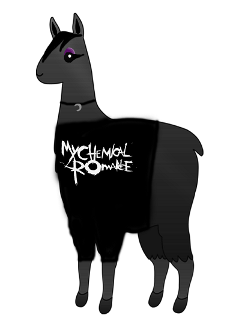
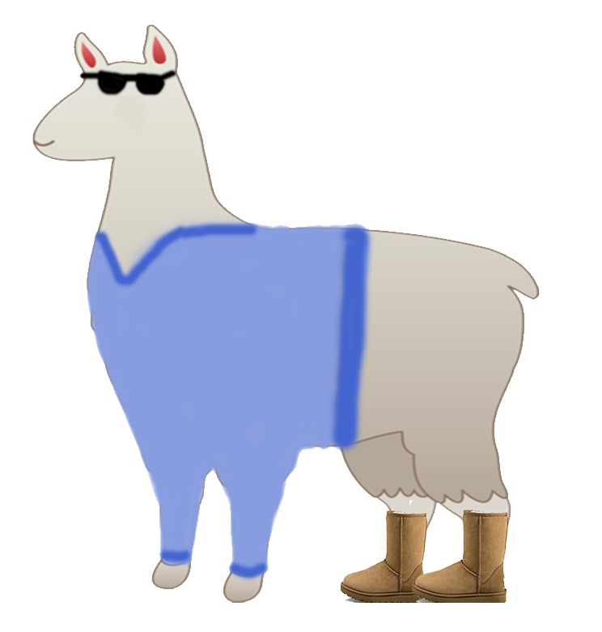
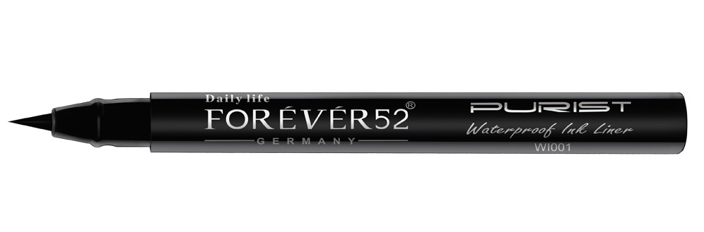
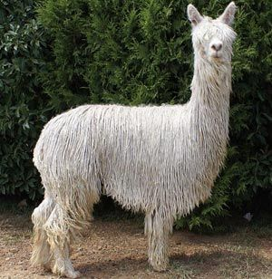

AlpacaMan
Embrace your inner Emo... in alpaca form
"The graphics are impecable, the quality unlike anything I've ever seen. 10/10" -Mashable
"Some say music is not a type of music. That it is more of a fashion and a way of feeling, hence the emotional." -Anonymous
"This game is true quality at its finest. I was able to release my inner emotions without being emo in real life." -Wall Street Journal
Gameplay
Use the arrow keys to manuever Ebony Darkness through the halls of Mountain Vista. Collect eyeliner to earn one point and Emo CDs to earn five points. Collect concert tickets to earn an extra life. Once you get 100 points, you will reach your full potential as an emo alpaca and be able to approach and deal damage to William Bonaparte upon collision for 10 seconds.
Character Bios
Ebony Darkness

Ebony Darkness is a lonely alpaca whose life was perfect until My Chemical Romance broke up. Now she wanders the halls of Mountain Vista High School doing all that she can to avoid the preppy alpacas. With nothing left to live for, her life revolves around collecting eyeliner and CDs throughout the halls of Vista.
William Bonaparte

William Bonaparte was born and raised in the Highlands Ranch suburbs. As starting quarterback of the football team and leader of the fashion club, William is loved by the entire school. Except Ebony. Ebony despises William, so William attempts to approach her to make things right. No one can hate William!

This is your eyeliner. It is the only thing that makes you feel good about yourself. Collect these by colliding with them to earn one point.

This is a CD. You listen to it when you remember you have no friends. Collect them to earn five points.
This is a golden concert ticket. You need it to see the only people who understand you: band members. It will appear once you reach 25 points, collect it to earn an extra life.

This is a mop.